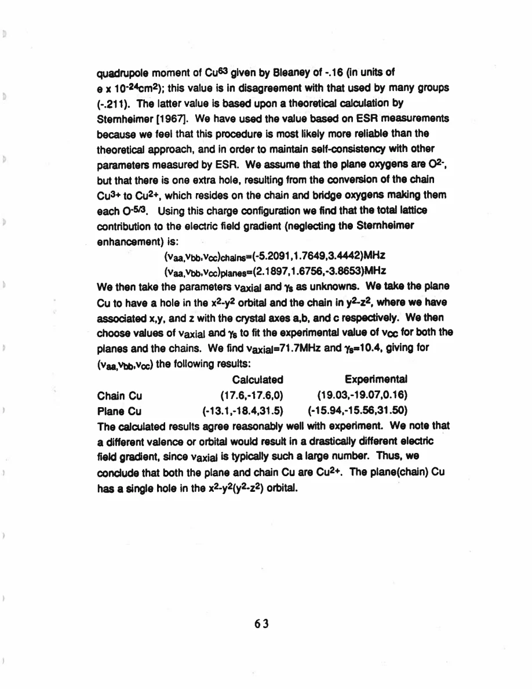
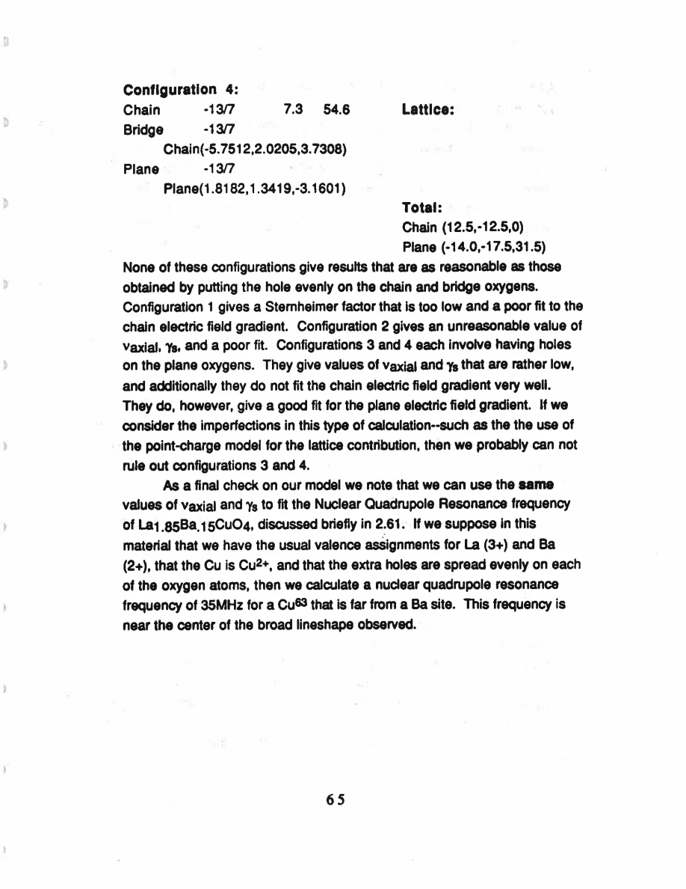

Pennington · supplied source 1989 · chapter unit
7. The EFG valence and orbital model
A Cu²⁺-like hole at both Cu sites is plausible, but its preferred oxygen-hole distribution is not uniquely established.
The question: Which charge model accounts for both EFG tensors without implausible parameters?
Before you start: the terms you need
- Plane Cu / chain Cu: the two crystallographic copper sites in YBCO
- EFG: electric field gradient, which couples to a nuclear quadrupole moment
- Magnetic shift: the field-proportional frequency change after quadrupole contributions are separated
- W₁: the thesis’s elementary satellite population-transition rate, not automatically 1/T₁
- Redfield contribution: echo decay generated by the fluctuating fields also responsible for population recovery
- Transferred hyperfine coupling: a nuclear spin senses electronic spins through orbital mixing or intervening atoms
See → explain → check
Follow the idea in 3 pictures.
Picture 1 / 3
Combine local and lattice terms
Look for: The measured EFG is not an isolated-ion number.
Swipe across the picture to read every label, or enlarge it below.
- 3d-hole term
- Lattice term
- Total EFG
Teaching decomposition; the fitted enhancement is model-dependent.
Orbital anisotropy and surrounding charges both contribute.
Picture 2 / 3
Test two-site consistency
Look for: Use one plausible atomic scale to explain two environments.
Swipe across the picture to read every label, or enlarge it below.
- Plane Cu
- Chain Cu
Orbital labels in crystal axes, not literal isolated ionic charges.
Both Cu sites can be modeled with one d hole, in different orbitals.
Check the original: PDF p. 75
Picture 3 / 3
Retain alternative charge patterns
Look for: A preferred fit does not exclude every competing distribution.
Swipe across the picture to read every label, or enlarge it below.
- Measured EFG tensors
- Point-charge / d-hole model
- Preferred charge pattern
The source explicitly cannot rule out some plane-oxygen-hole configurations.
Point-charge limitations leave oxygen-hole location ambiguous.
Explain it back.
Try answering aloud before opening the explanation.
What is stronger: single-hole Cu²⁺ character or exact oxygen-hole location?
The source treats the former as more robust and explicitly leaves some alternative oxygen configurations possible.
Can a quadrupole frequency alone uniquely determine Cu valence?
No. The interpretation combines local orbital and lattice contributions with atomic and enhancement assumptions.
Go deeper Follow the full argument
Why a d hole changes the EFG strongly
A filled Cu 3d shell is approximately spherical and contributes no local EFG in the model. Removing one electron creates an anisotropic hole contribution tied to the orbital’s shape. Classic Cu²⁺ electron-spin-resonance work supplies the scale: an x²−y² hole gives an axial pattern roughly(−35,−35,70) MHz in its own orbital axes. A different hole orbital can alter signs and principal directions strongly. The author therefore compares the measured plane and chain EFG with specified local-hole configurations rather than treating the quadrupole frequency as a generic doping meter. The local term must be combined with the lattice-ion contribution. Neighboring ionic charges distort core orbitals, so the lattice term is multiplied by a Sternheimer enhancement. Both its magnitude and the charge assumptions affect what valence model can be inferred.
Fit two sites with shared atomic parameters
The preferred calculation uses a plane x²−y² hole and a chain y²−z² hole, with x=a,y=b,z=c. It assigns the extra oxygen-related hole to chain and bridge oxygens, corresponding in the bookkeeping model to charge−5/3 at those sites while plane oxygens remain−2. A lattice sum gives the unenhanced tensor contributions. Choosing the axial 3d-hole scale 71.7 MHz and enhancement 10.4 reproduces plane and chain tensors reasonably: the computed chain pattern is near(17.6,−17.6,0) MHz and the plane pattern near(−13.1,−18.4,31.5) MHz in the chapter’s sign convention. These are predictions from a point-charge/atomic model, not a second independently measured tensor table. The thesis also notes its choice of⁶³Cu quadrupole moment differs from a value then used by other groups. Consistency with its atomic inputs is part of the decision, so precise parameter values should not be transferred blindly to another convention or compound.
What remains nonunique
Several alternative oxygen-charge patterns are tried. Some give an implausible axial-hole scale or enhancement and a poor chain fit. Configurations containing plane-oxygen holes can fit the plane tensor well and are less successful for the chain. However, the author explicitly says the point-charge approximation is imperfect enough that certain alternatives cannot be ruled out. The source therefore supports a Cu²⁺-like single-hole picture more strongly than it supports a unique spatial allocation of the oxygen holes. A contextual calculation for LBCO places its predicted NQR frequency near 35 MHz, around the center of a broad observed line, but this does not solve the two LBCO sample shapes. Also, the overall EFG sign in this chapter is opposite to the earlier tensor table. Teaching should compare magnitudes, symmetries and a declared convention rather than silently joining signed numbers from the two presentations.
Translate the mathematics Essential equations and their meaning
Read the evidence Guided original source pages

PDF p. 75

PDF p. 77
What the evidence supports—and where it stops
- Point-charge lattice treatment and the selected nuclear quadrupole moment affect the fitted values.
- Signed EFG values require an explicit convention; the two thesis presentations have opposite overall signs.
Source version, reading coverage and preservation
All 146 scanned pages rendered and locally OCR-recognized with Windows.Media.Ocr. Research prose of PDF 13–139 read in full; source-specific formulas and selected complete page figures inspected individually. PDFpage=printedpage+12.
Reviewed body pages: 13, 14, 15, 16, 17, 18, 19, 20, 21, 22, 23, 24, 25, 26, 27, 28, 29, 30, 31, 32, 33, 34, 35, 36, 37, 38, 39, 40, 41, 42, 43, 44, 45, 46, 47, 48, 49, 50, 51, 52, 53, 54, 55, 56, 57, 58, 59, 60, 61, 62, 63, 64, 65, 66, 67, 68, 69, 70, 71, 72, 73, 74, 75, 76, 77, 78, 79, 80, 81, 82, 83, 84, 85, 86, 87, 88, 89, 90, 91, 92, 93, 94, 95, 96, 97, 98, 99, 100, 101, 102, 103, 104, 105, 106, 107, 108, 109, 110, 111, 112, 113, 114, 115, 116, 117, 118, 119, 120, 121, 122, 123, 124, 125, 126, 127, 128, 129, 130, 131, 132, 133, 134, 135, 136, 137, 138, 139. Acknowledgments and biography are not teaching material. Bibliography not independently verified against external publications. Mathematical derivations are summarized at final-result level; not every algebraic line independently reconstructed.
Source SHA-256: 85b6d3c8d20ccc23476bf72473860248d5228e16892afefa8dec6c7054d43c26. Original file bytes preserved locally, and in this room’s original download.
Thesis - Pennington - 1989 - Single crystal NMR of high temperature superconductors.pdf